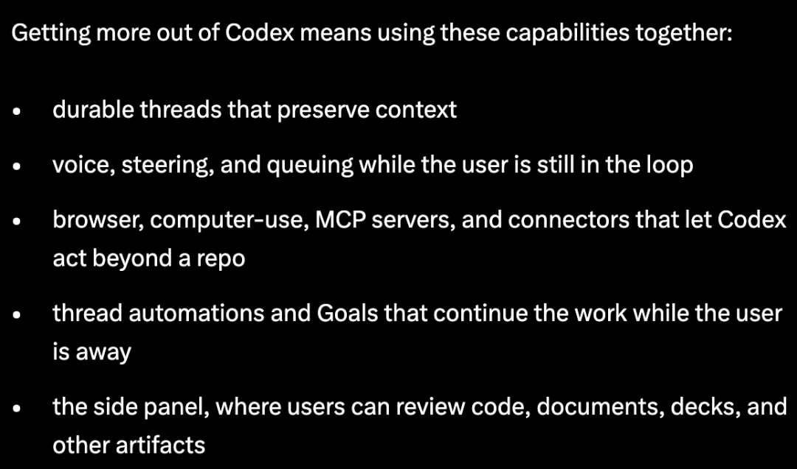
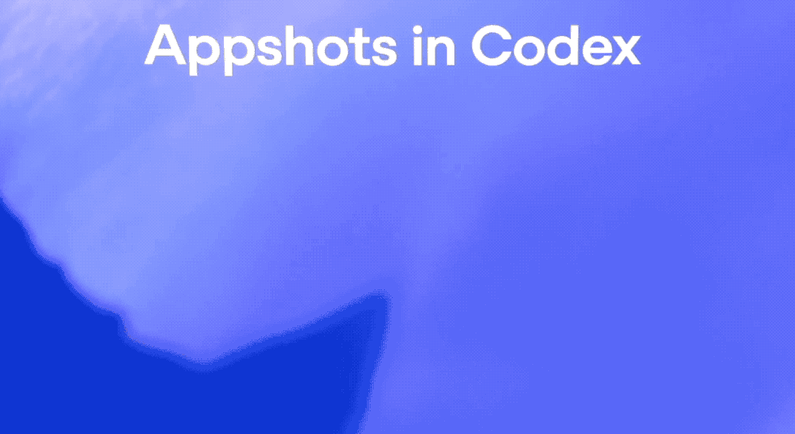
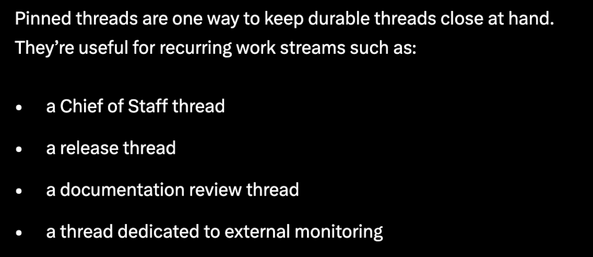
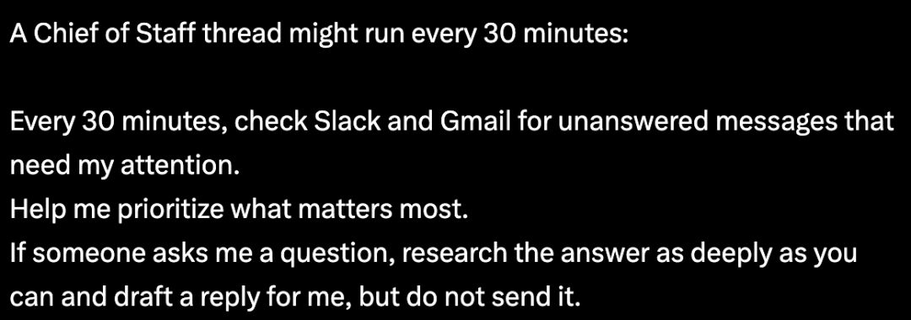
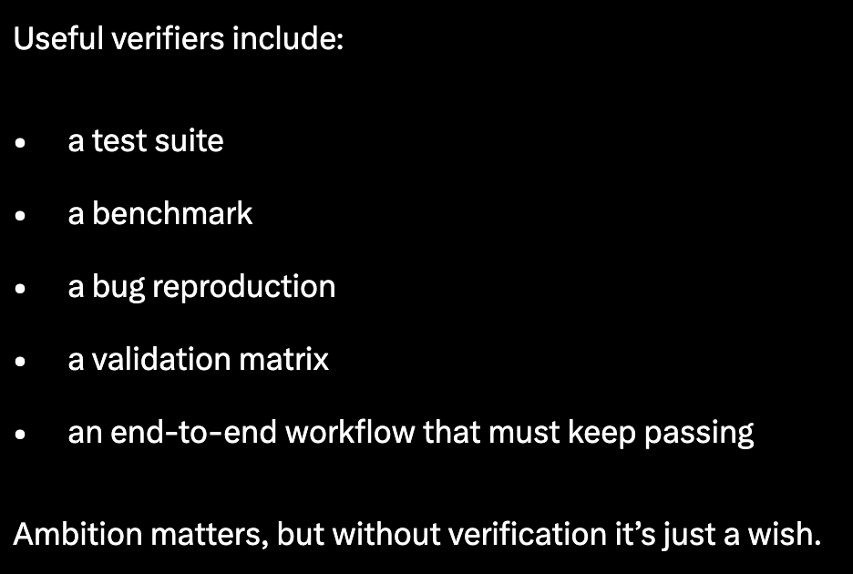
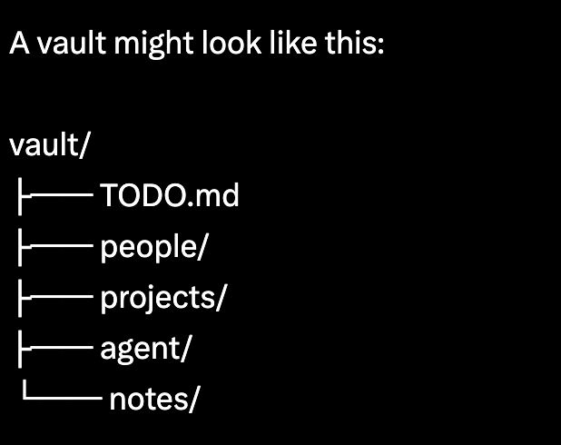
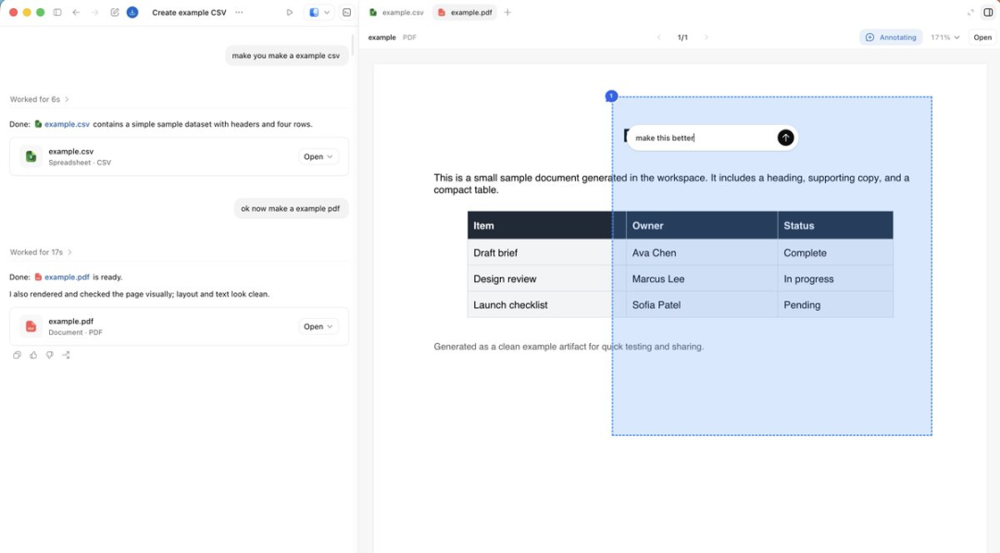

闻乐 发自 凹非寺
量子位 | 公众号 QbitAI
新晋员工确实毫无保留。
Jason Liu，13k星开源库Instructor的作者，刚被OpenAI招进Codex团队没多久，不仅在社交平台大方发API额度；
还写了篇Codex-maxxing，把自己的Codex玩法全抖出来了。
而且是让Codex自动跟进亚马逊退款、定时扫Slack接需求、开着Heartbeats在你洗澡的时候帮你干活的那种。
Codex周活用户4月底已经破了400万，终于来了份“官方使用指南”。

正好，这两天Codex又更新了一波：Appshots截图直喂、Goal模式正式转正、锁屏后也能远程干活。

跟Jason的使用心法叠在一起看会发现，现在大家比拼的，是谁能持续工作更久，谁能真正上岗了……
让它自己跑起来
Jason整套玩法的核心，是把Codex改造成了一个能长期运行、持续接管任务的工作系统。
多数人习惯单次问答结束就关闭会话，但Jason是开着一堆跨月存活的巨型线程，不会随意终止。
他给每个工作流一个置顶线程：管日程的一个、管开源项目的一个、监控社交平台的一个……通过Command-1到Command-9一键跳转。

线程里积累了几个月的对话历史、偏好和决策，再次使用时不用重新交代背景，Agent就能自动承接进度。
当线程生命周期被拉长后，项目背景、沟通习惯和历史决策都会自然沉淀进去，Agent开始具备连续性。
而且Jason下任务不打字，主要靠说。
在他看来，口述能完整保留原始思路，不需要刻意优化Prompt，可以直接把模糊、跳跃、带溯源需求的想法原样丢给Agent。
再配合Codex的Steering功能，还能在Agent执行任务时插队追加指令，说完就走，不用干等。
不过，真正让Codex从工具变员工的，是Heartbeats+@computer这套组合拳。

Heartbeats本质上相当于给Agent加了一层定时任务调度。
Jason有个Chief of Staff线程，每30分钟跑一次——
扫一遍Slack和Gmail，看看有没有需要回复的消息，判断优先级，需要回复的先起草一份草稿，但不发送，最终由人来决定是否发出。
他还举了一个更复杂的例子是，做动画项目时，他会先把视频发到Slack审阅线程，然后让Codex每15分钟检查一次线程。
如果同事提了反馈，Codex就重新渲染一个新版本并回复到线程里。
因为Slack MCP服务器还不支持文件上传，Agent甚至会自己调用@computer去点“Add file”按钮，把渲染好的文件传上去。
还有一次，Jason在洗澡前让Codex盯着亚马逊客服排队状态，结果等他洗完澡出来，退款已经到账了。
类似的流程，现在已经能扩展到Google Docs评论、GitHub PR Review等场景，只要有反馈就自动推进下一步。
Jason最强调的一点，是验证机制，可以判断任务什么时候终止。
他试过让Codex把Python的Rich库完整迁移到Rust，硬性要求是必须通过原Python库的所有单元测试。
测试能不能通过，决定了任务是否完成；失败了，Agent就继续修。
用他的话说：
没有验证机制的野心，顶多算个愿望而已。

而在最新的这次更新中，OpenAI已经把Goal模式从实验版本转正了。
你只要明确一个最终目标和验收标准，Codex会自主持续推进，短则几小时长则数天，中途可以查进度、调方向，也可以直接暂停。
但前提是任务本身必须存在清晰、可验证的反馈闭环。
记忆放在自己手里
Jason这套用法的另一大核心思路，是个人工作记忆不应该托管在平台内部。
他所有的长期线程都从一个Obsidian vault起步，目录划分为TODO、people、projects、agent、notes等板块。

在顶层AGENTS.md里写明规则：人员信息更新、项目推进、待办办结等变动，都要同步更新知识库对应内容。
也就是说，他几乎放弃了Codex的内置记忆系统，把核心记忆数据存放在本地可控文件中，既能随时查阅手动修改，也能通过版本对比查看变动，出现问题还能一键roll back。
原因是AI承载的记忆体量越大，就越不该把数据锁死在单一平台。
而文件是完全属于用户自己的，后续想换工具、迁平台，拎着知识库就能走，毫无顾虑。
他也提到了Codex自带的记忆功能Chronicle，通过截取屏幕内容来构建上下文。
但这是需要手动开启的实验预览功能，在权限、速率和隐私方面存仍在短板，整体方向可行但还不够成熟。
所以，在他看来，文件系统仍然是最可靠的记忆基础设施。
而且Codex工作台本身也在升级。
Codex的侧边栏不再局限聊天交互，可直接渲染Markdown、筛选表格、阅览PDF与PPT。

Agent还能通过内置浏览器用JavaScript控制网页，用户可以边看边标注，不用来回切窗口。
Jason说他经常在侧边面板里同时打开Storybook审阅UI组件、用Remotion Studio做动画、用Slidev做演示文稿。
而他最喜欢的交付形式，就是一个带JS和CSS的单文件index.html，不用部署，不用服务器，打开就能跑。
另外，他还把Connectors和Skills作为可复用工作流模版。
只要成功做完一件有用的事，就把流程打包起来，下次Codex不用重新学，直接调用就行。
最近Codex还补了一手远程能力，电脑锁屏后Codex可以继续工作，手机端也能实时查看、审批甚至接管任务。
现在好了，你下班它加班，你锁屏它干活，超额KPI这不就来了……
不过，当AI可以持续接管工作，人自己倒是越来越轻松了（doge）。
参考链接：https://x.com/jxnlco/status/2057153744630890620
一键三连「点赞」「转发」「小心心」
欢迎在评论区留下你的想法！
— 完 —
🌟 点亮星标 🌟